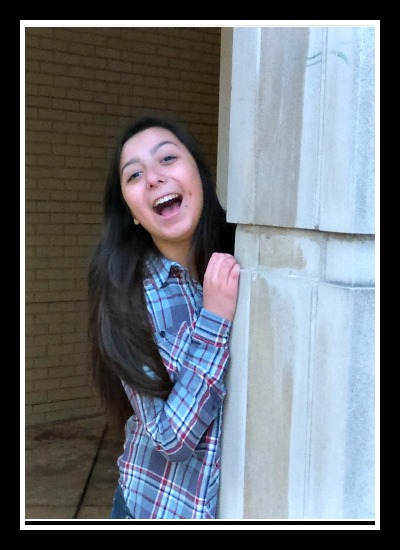
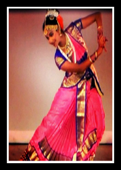
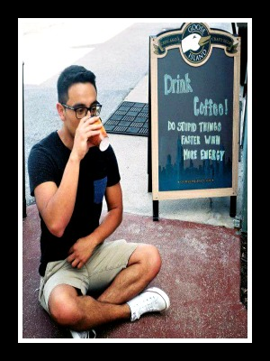

Meet A Freshmen
First Year Engineering Student at Washington University in St. Louis
"Why do you hate me!”
~Jess

- Name: Jessica Jiminez
- Nickname: Jess
- Gender: Female
- Major: Mechanical Engineering
- Demographics: Mexican American
- Age: 19
- Why this major: My uncle built a pump once and I watched him. He said, “One day this could be you.” I responded “ Si, tio.” Now I am here!
- Hobbies: Netflix, Watching Youtube, Writing Poetry
- Favorite Restaurants Near Campus: Sweetie Pies, Pointers, Papi’s Smokehouse
- Campus Fun: Ursa’s FireSide, Edison Theater, Exploring Tunnels
- Off Campus Fun: Haven’t gotten around to it yet.
- Culture Diversity: ALAS: Association of Latin American Students
- Communication:Friend her on Facebook
- Experience at WashU: “I’ve had fun”
First Year Engineering Student at Washington University in St. Louis
"Wait! Let me grab a chocolate so I can make a foil crane"
~Shrey Shrey

- Name: Shreya Goddu
- Nickname: Shrey Shrey
- Gender: Female
- Major: Biomedical Engineer
- Demographics:Indian American
- Age: 18
- Goals: Create medical devices to help society. More specifically working with regenerative tissue toward cures and more effective treatment for cancer.
- Behavior/personality: Introverted until comfortable, working on sarcasm. Socially inept. Bad at telling stories. I only eat at chain restaurants. You do not enjoy the cold weather in comparison to the hot summer days of India.
- First language: Telugu
- Favorite Restaurants Near Campus: Maggianos, Ibby’s , iHop
- Campus Fun: Ursa’s FireSide, Going to Class, Going through buildings
- Off Campus Fun: The Galleria, Cinema 6 (because tickets are really cheap)
- Culture Diversity: Diwali, Indian Cuisine at World Fusion in Bear’s Den
- Communication: Morse Code, Instagram (follow me @shreyshreygoddu)
- Experience at WashU: I live in the bubble. BioMedical Engineer (business major eventually!)
First Year Engineering Student at Washington University in St. Louis
“Lately I’ve been thinking about the brevity of life and how we shouldn’t put off happiness in the present for happiness in the future.”
~Dimples

- Name: Daniel Uriel Cano Pargas
- Nickname: “Dimples”
- Gender: Male
- Major: Mechanical Engineering
- Demographics: Mexican American
- Age: 19
- Goals: To create technology and advancements that can assists people, physically or mentally, in their daily lives on a macro scale.
- Behavior/personality: I lack empathy and sometimes struggle to perceive awkwardness. I generally consider myself friendly and I enjoy when the people around me are smiling. I’d say I’m extroverted but very self-motivated. I love to love things.
- First language: Spanish
- Favorite Restaurants Near Campus: Thai Country Cafe, U-City Grill
- Campus Fun: Walking through the swamp, staring at people’s dogs, sitting in random spots.
- Off Campus Fun: The Tivoli, AMC Esquire 7, A lot of places I can’t think of.
- Culture Diversity: Association of Latin American Students
- Communication: English, Spanish, French. @DanielCatno for more social media.
- Experience at WashU: It’s beautiful, inspiring, and disheartening all at once and I’m not sure if I want more or less of it all.